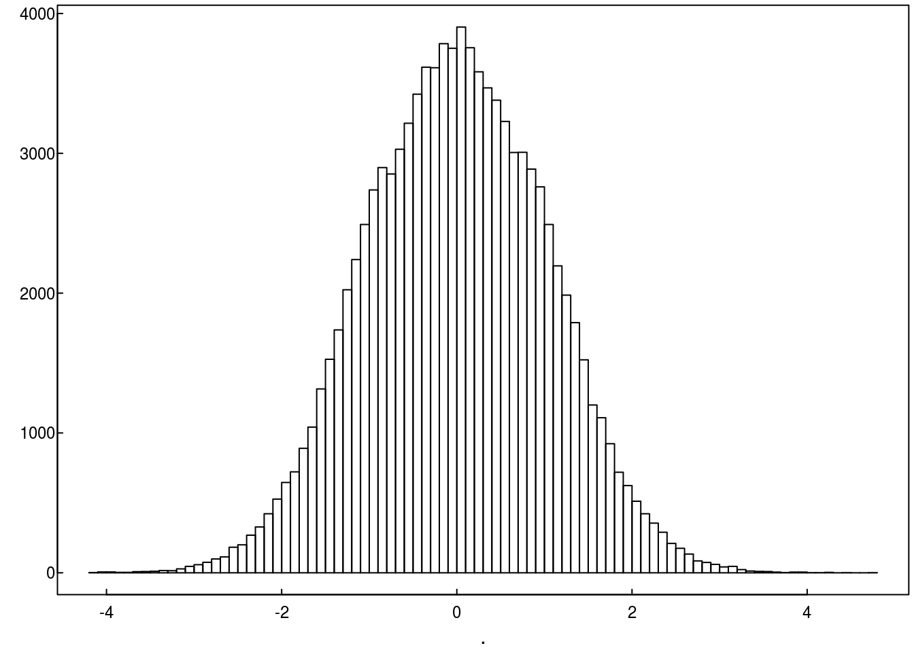
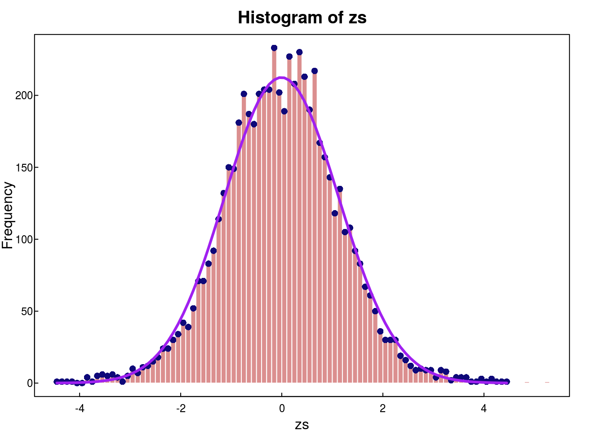

LSI section 5.1
set.seed(2353)
suppressMessages(require(tgsify))
prostate <- "http://statweb.stanford.edu/~ckirby/brad/LSI/datasets-and-programs/data/prostatedata.RData" %>%
url
load(prostate)
close(prostate)
pd <- prostatedata
status <- pd %>% colnames %>% as.numeric %>% `[`(c("No cancer","Cancer"), .)Recall from 2.1, the object pd is a matrix where pd[i,j] is the expression level for gene i on patient j. The column header indicates the cancer status of subjects. (1 = no cancer, 2 = cancer)
The z-values can be calculated as follows:
tvalue <- function(x, g) t.test(x ~ g) %>% le("statistic")
zs <- pd %>% apply(1, tvalue, g = status) %>% pt(100) %>% qnorm
## Not run, but will show that zs calculated above match the zs in the book
# con <- "http://statweb.stanford.edu/~ckirby/brad/LSI/datasets-and-programs/data/prostz.RData" %>% url
# load(con); close(con)
# plot(prostz, zs)
# max(prostz - zs)Truncate zs greater than 4.5
#zs <- zs[abs(zs) <= 4.5]Estimation of \(\pi_0\) (Section 4.5)
Recall the setup of the mixture model:
\[ \begin{align*} \text{Let }\ Z &= G_0\cdot Z_0 + (1-G_0)Z_1 \\ \ \\ \text{where }\ Z_0 &\sim N(0,1)\\ Z_1 &\sim \text{alternative distribution}\\ G_0 &\sim BIN(1, \pi_0)\\ \end{align*} \]
Suppose that \[ f_{Z_1}(z) = 0\ \text{ for }\ -a\leq z \leq a, \]
which might look something like this:
r_zero_alternative <- function(N, a = .7, shape = 2, rate = 3){
(-1)^rbinom(N, 1, .5) * (a + rgamma(N, shape, rate))
}
d_zero_alternative <- function(x, a = .7, shape = 2, rate = 3){
1*(abs(x)-a > 0) * dgamma(abs(x)-a, shape, rate)/2
}
plotstyle(style = upright)
r_zero_alternative(1e5) %>% hist(breaks = 100, ylab = "", main = "", freq = FALSE)
abline(v = c(-1,1)*.7, col = "grey")
box()
curve(d_zero_alternative, add = TRUE, lwd = 3, col = "#19077860")An example of a draw from the mixture distribution (with \(\pi_0 = .95\)) is:
plotstyle(style = upright)
N <- 1e5
g <- rbinom(N,1,.95)
z <- g*rnorm(N) + (1-g)*r_zero_alternative(N,.7,2,3)
z %>% hist(breaks = 100, main = "", ylab = "")
box()
Under the assumption of the zero alternative, \[ \begin{align*} P(-a\leq Z \leq a) &= \sum_{i=0}^1 P(G = i)\,P(-a\leq Z \leq a | G = i)\\ &=P(G = 0)\,P(-a\leq Z \leq a | G = i) + P(G = 0)\,P(-a\leq Z \leq a | G = 1)\\ &=\pi_0 \cdot [\Phi(a)-\Phi(-a)] + (1-\pi_0)\cdot 0 \\ &=\pi_0 \cdot [\Phi(a)-\Phi(-a)] \\ \ \\ \text{And }\ \pi_0 &= \frac{P(-a\leq Z \leq a)}{\Phi(a)-\Phi(-a)} \end{align*} \]
An empirical estimate of \(\pi_0\) is the plug-in estimator:
\[ \hat{\pi}_0 = \frac{\frac{1}{N}\sum{I(|z_i| < a)}}{\Phi(a)-\Phi(-a)} \]
A function which calculates the plug-in estimator under the zero-alternative assumption is:
estimate_pi <- function(z, a){
out <- rep(NA, length(a))
for(i in 1:length(a)){ out[i] <- mean(abs(z) < a[i]) / (pnorm(a[i]) - pnorm(-a[i])) }
out
}Estimation of \(\pi_0\) in the simulated data with known a
as <- c(.1, .2, .3, .4, .5, .6, .7, .8, .9)
pi_hat <- estimate_pi(z, as)
plotstyle(style = upright)
par(mar = c(2,2,4,4))
plot(as, pi_hat, type = "b", xlab = "a", ylab = "", ylim = c(.94,.96))
title(main = "Estimated π in simulated data", line = 3)
abline(v = .7, col = "#00000080")
axis(3,.7,"True a")
abline(h = 0.95, col = "#00000080")
axis(4,.95,"True π")Estimation of \(\pi_0\) in the prostate data
pis <- estimate_pi(zs, as)
plotstyle(style = upright)
par(mar = c(2,2,4,4))
plot(as, pis, ylab = "", xlab = "", type = "b")
title(main = "Estimates of π as a function of a", xlab = "a")
axis(3,median(as), "True a?", tick = FALSE)
axis(4,mean(par()$usr[3:4]), "True π?", tick = FALSE)
book1 <- estimate_pi(zs, a = .75)
book2 <- estimate_pi(zs, a = .78)
points(.75, book1, col = "red", cex = 2)
points(.78, book2, col = "blue", cex = 2)
legend("topleft", c("The value of a in the book", "The value of π in the book"), col = c("red","blue"), pch = 16, bty = "n")DTI data
con <- "http://statweb.stanford.edu/~ckirby/brad/LSI/datasets-and-programs/data/DTIdata.RData" %>% url
load(con); close(con)
as <- seq(0.2, 0.8,by = 0.005)
pis <- estimate_pi(DTIdata[,4], as)
plotstyle(style = upright)
par(mar = c(2,2,4,4))
plot(as, pis, ylab = "", xlab = "", type = "b", ylim = c(min(pis), 0.94))
title(main = "Estimates of π as a function of a", xlab = "a")
axis(3,median(as), "True a?", tick = FALSE)
axis(4,mean(par()$usr[3:4]), "True π?", tick = FALSE)
book1 <- estimate_pi(DTIdata[,4], 0.75)
points(.75, book1, col = "red", cex = 2)
abline(h = 0.935, col = "blue")
legend("topleft", c("The value of a in the book", "The value of π in the book?"), col = c("red","blue"), pch = 16, bty = "n")Lindsay’s methods for esimating f(z)
ws <- cut(zs, breaks = seq(-4.5, 4.5, by = .1))
labs <- levels(ws)
lo <- labs %>% sub("\\((.+),.*", "\\1", .) %>% as.numeric
up <- labs %>% sub("[^,]*,([^]]*)\\]", "\\1", .) %>% as.numeric
mp <- .5*lo + .5*up
cs <- table(ws)
plotstyle(style = upright)
par(mar = c(2,2,2,2))
hist(zs, breaks = 90, col = "#ad000070",border = "white")
points(mp, cs, col = "#0E0879")
glm1 <- glm(cs ~ poly(mp, degree = 3, raw = TRUE), family = poisson)
yhat <- glm1 %>% predict(type = "response")
lines(mp, yhat, col = "purple", lwd = 3)
box()
ECDF methods for esimating f(z)
suppressMessages(require(splines))
pz <- ecdf(c(-10, zs, 10))(zs)
plotstyle(style = upright)
par(mar = c(2,2,2,2))
plot(zs, pz, col = "#0E0879")
logodds <- function(x) log(x/(1-x))
sigmoid <- function(x) 1/(1+exp(-x))
l1 <- lm(logodds(pz) ~ poly(zs, degree = 3))
points(zs, sigmoid(l1$fitted), col = "purple")
p_lo <- predict(l1,newdata=data.frame(zs = lo)) %>% sigmoid
p_up <- predict(l1,newdata=data.frame(zs = up)) %>% sigmoid
phat <- p_up - p_lo
nhat <- phat * length(zs)
hist(zs, breaks = 90, col = "#ad000070",border = "white")
lines(mp, yhat, col = "purple", lwd = 3)
lines(mp, nhat, col = "darkgreen", lwd = 3)
box()
legend("topleft", c("Lindsay's","ECDF"), lwd = 3, col = c("purple","darkgreen"), bty = 'n')